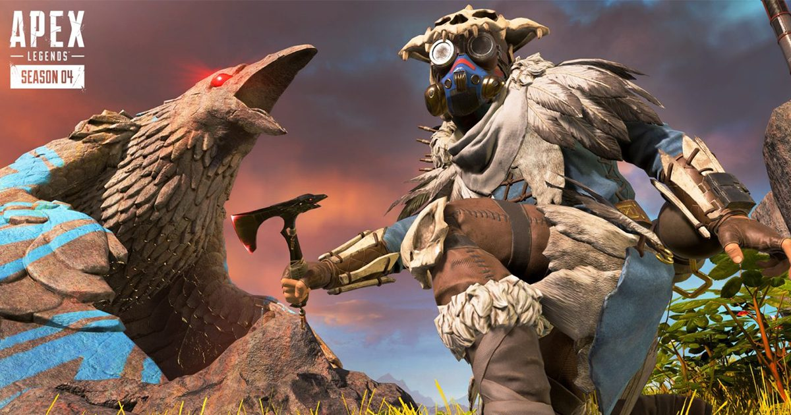
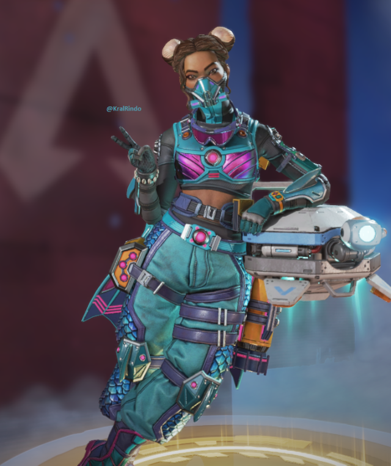
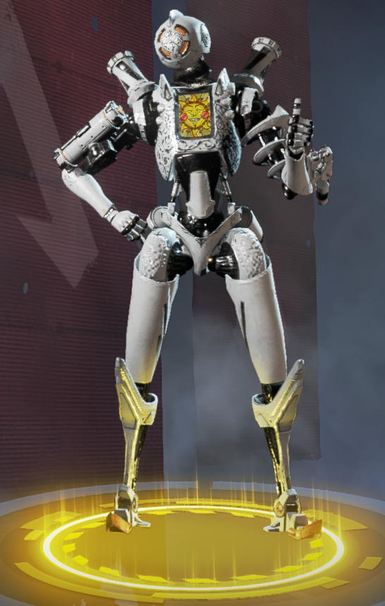
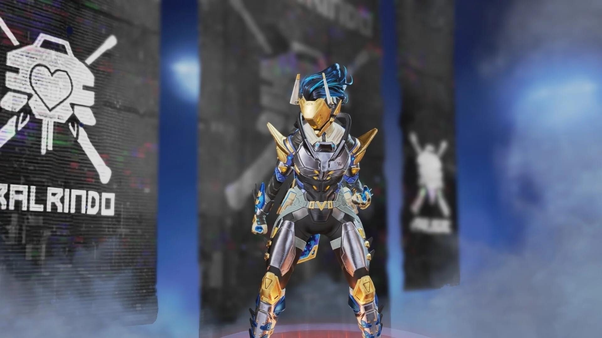

| 角色介紹

Bloodhound 在外域以 Frontier 有史以來最偉大的獵人之一而聞名
Bloodhound 是駐紮在 Talos 的 New Dawn 工廠的兩名工程師的孩子
在一場熔毀摧毀了該工廠並殺死了他們的父母之後
他們被他們的叔叔阿圖爾收留了
阿圖爾教給他們舊方法
一種專注於自然榮耀並拒絕現代技術的信仰體系
然而尋血獵犬卻不斷被科技奇蹟所吸引
最終用新舊手段打倒了以村民為食的歌利亞
從此改變了他們的人生軌跡。 我要玩
尋血犬
技術追踪器
Bloodhound 在外域以 Frontier 有史以來最偉大的獵人之一而聞名
Bloodhound 是駐紮在 Talos 的 New Dawn 工廠的兩名工程師的孩子
在一場熔毀摧毀了該工廠並殺死了他們的父母之後
他們被他們的叔叔阿圖爾收留了
阿圖爾教給他們舊方法
一種專注於自然榮耀並拒絕現代技術的信仰體系
然而尋血獵犬卻不斷被科技奇蹟所吸引
最終用新舊手段打倒了以村民為食的歌利亞
從此改變了他們的人生軌跡。 我要玩
直布羅陀
屏蔽堡壘
直布羅陀是一個溫柔的巨人也有狂野的一面
他是兩名SARAS志願者的兒子
他一直擅長將他人從外域常見的危險境地中解救出來。然而
當他和男友偷了他父親的摩托車
開著它兜風
卻被一場致命的泥石流困住時
他才開始明白保護他人的價值
他的父母救了他們
而他的父親在此過程中失去了一隻手臂
直布羅陀從未忘記那次犧牲
並畢生致力於幫助有需要的人。 我要玩

又名生命線
不是您期望在 Apex Games 中找到的人
作為富有的戰爭奸商的孩子
她在得知家人造成的損失後離開了家
並加入了邊境軍團
這是一個幫助有需要的邊境社區的人道主義組織
從那以後
她將自己的一生奉獻給了幫助他人
並加入了 Apex Games
為有需要的人提供更多資金。 我要玩
生命線
戰鬥醫生
Ajay Che又名生命線
不是您期望在 Apex Games 中找到的人
作為富有的戰爭奸商的孩子
她在得知家人造成的損失後離開了家
並加入了邊境軍團
這是一個幫助有需要的邊境社區的人道主義組織
從那以後
她將自己的一生奉獻給了幫助他人
並加入了 Apex Games
為有需要的人提供更多資金。 我要玩

儘管他的情況
一個 MRVN（移動機器人多功能實體）
具有位置偵察和測量的天賦
他幾十年前在一個廢棄的倉庫裡啟動
不知道是誰創造了他
也不知道為什麼
只有他的 MRVN 名稱暗示了他的身份
探路者最終出發去尋找他的創造者
在傳奇人物的幫助下
他得知自己是由外域最偉大的科學家建造的
旨在幫助解決外域的能源危機。 我要玩
探路者
前鋒偵察兵
探路者是樂觀的形象儘管他的情況
一個 MRVN（移動機器人多功能實體）
具有位置偵察和測量的天賦
他幾十年前在一個廢棄的倉庫裡啟動
不知道是誰創造了他
也不知道為什麼
只有他的 MRVN 名稱暗示了他的身份
探路者最終出發去尋找他的創造者
在傳奇人物的幫助下
他得知自己是由外域最偉大的科學家建造的
旨在幫助解決外域的能源危機。 我要玩

能夠執行致命攻擊並通過在現實結構中打開裂縫來操縱時空——但這些能力是有代價的
多年前
她在 IMC 拘留所醒來
完全不記得自己是誰
高級科學飛行員蕾妮·布拉西 (Renee Blasey)，她自願充當自己實驗的豚鼠……她的伴侶背叛了她並將她鎖起來……不復存在了
只剩下一個膽小的女孩
被腦海中嘈雜的聲音嚇壞了
直到另一個版本的她出現並教她傾聽這些聲音
在她的帶領下
Wraith 找到了擺脫監獄的力量
逃進了一個不同的現實——這個現實。 我要玩
惡靈
跨維度散兵
幽靈是一名旋風戰士能夠執行致命攻擊並通過在現實結構中打開裂縫來操縱時空——但這些能力是有代價的
多年前
她在 IMC 拘留所醒來
完全不記得自己是誰
高級科學飛行員蕾妮·布拉西 (Renee Blasey)，她自願充當自己實驗的豚鼠……她的伴侶背叛了她並將她鎖起來……不復存在了
只剩下一個膽小的女孩
被腦海中嘈雜的聲音嚇壞了
直到另一個版本的她出現並教她傾聽這些聲音
在她的帶領下
Wraith 找到了擺脫監獄的力量
逃進了一個不同的現實——這個現實。 我要玩
邦加羅爾
職業軍人
班加羅爾出生於一個軍人家庭她、她的父母和她的四個哥哥都在 IMC 服役
她一生都是一名傑出的軍人
她致力於 IMC 事業
是 IMC 軍事學院班上的佼佼者
也是唯一一個能夠拆解 Peacekeeper
為其配備精密扼流圈彈跳裝置
並在 20 秒內將其重新組裝起來的學員——蒙著眼睛。 我要玩